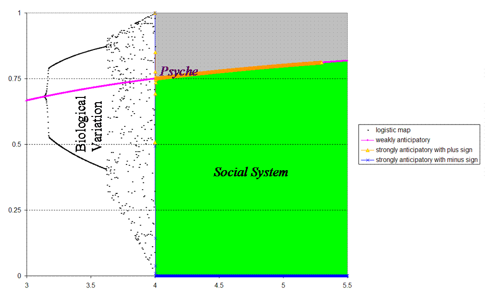

RE: FORWARD Re: [Fis] Post-concluding remarks:Realism/anturealism: Lawsof nature? (fwd)RE: FORWARD Re: [Fis] Post-concluding remarks:Realism/anturealism: Lawsof nature? (fwd)
From: Loet Leydesdorff <loet@leydesdorff.net>
Date: Fri 27 Oct 2006 - 07:55:18 CEST
> SS: Concerning configurations, looking at the
Beyond the biological, the psychological and the sociological take over by
<http://users.fmg.uva.nl/lleydesdorff/temp/index_files/image001.gif>
x(t+1) = a x(t) [1 - x(t)]
The psyche is modeled as a weakly anticipatory system using the incursive
x(t+1) = a x(t) [1 - x(t+1)]
The social system as a strongly anticipatory one using a hyperincursive
x(t) = a x(t+1) [1 - x(t+1)}
Since this equation is quadratic, one obtains two solutions at each time
(For those of you, who do not receive these emails in html, please, consult
With best wishes,
Loet
_____
Loet Leydesdorff
Now available:
_______________________________________________

Received on Fri Oct 27 07:57:26 2006
|
This archive was generated by hypermail 2.1.8 on Fri 27 Oct 2006 - 07:57:26 CEST
{kind=link}